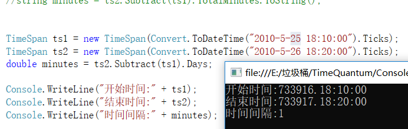
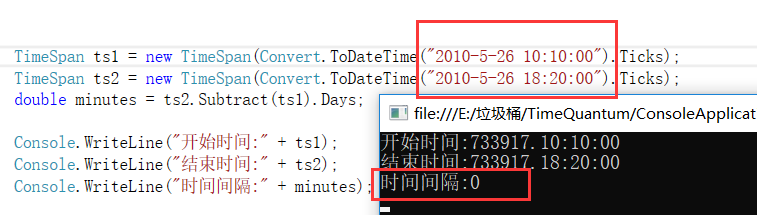
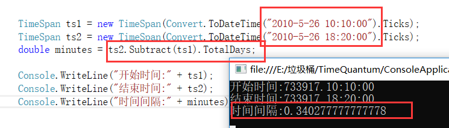
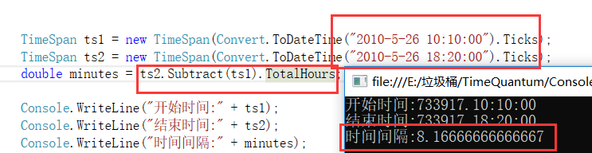
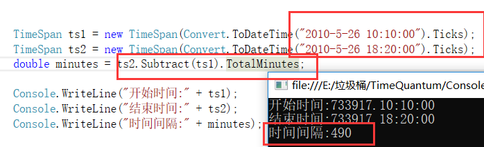

TimeSpan的属性和方法:
下面的列表涵盖了其中的一部分：
属性:
Add：与另一个TimeSpan值相加。
Days: 返回用天数计算的TimeSpan值。
Hours: 返回用小时计算的TimeSpan值
Milliseconds: 返回用毫秒计算的TimeSpan值。
Minutes: 返回用分钟计算的TimeSpan值。
Seconds: 返回用秒计算的TimeSpan值。
Ticks: 返回TimeSpan值的tick数。
TotalDays: 返回TimeSpan值表示的天数。
TotalHours: 返回TimeSpan值表示的小时数。
TotalMilliseconds: 返回TimeSpan值表示的毫秒数。
TotalMinutes: 返回TimeSpan值表示的分钟数。
TotalSeconds: 返回TimeSpan值表示的秒数
方法:
Duration:获取TimeSpan的绝对值。
Negate:返回当前实例的相反数。
Subtract:从中减去另一个TimeSpan值。
一:Days,Hours,Milliseconds,Minutes,Seconds 表示获取当天TimeSpan结构表示的时间间隔的天数,时,毫秒,分,秒
TimeSpan ts1 = new TimeSpan(Convert.ToDateTime("2010-5-25 18:10:00").Ticks);
TimeSpan ts2 = new TimeSpan(Convert.ToDateTime("2010-5-26 18:20:00").Ticks);
double minutes = ts2.Subtract(ts1).Days;
Console.WriteLine("开始时间:" + ts1);
Console.WriteLine("结束时间:" + ts2);
Console.WriteLine("时间间隔:" + minutes);

两个时间的间隔相差一天,返回的是一个天数,如果两个时间相差的时间不够一天那么返回的是什么呢?

如果两个时间的天数不足一天那么返回的就是0,其他的时间也是同样如此,
那么我们想要获取两个时间就算不满足一天也想要知道结果,那怎么办呢,
二:TotalDays,TotalHours,TotalMilliseconds,TotalMinutes,TotalSeconds 获取整天数和天的小数部分表示的当前TimeSpan结构的值
没错,这几个方法就是可以当我们不满足一天的时候就会以小数的形式呈现
TotalDays:

TotalHours:

其他的属性都是如此,就不一一展示了.
三:Subtract,Negate,Duration
Subtract:表示两个时间的差值

使用Subtract()方法获取两个时间的差值,后面的属性TotalMinutes表示返回的分钟数
Negate,Duration这两个暂时没有使用过,感兴趣的朋友可以自己去研究下